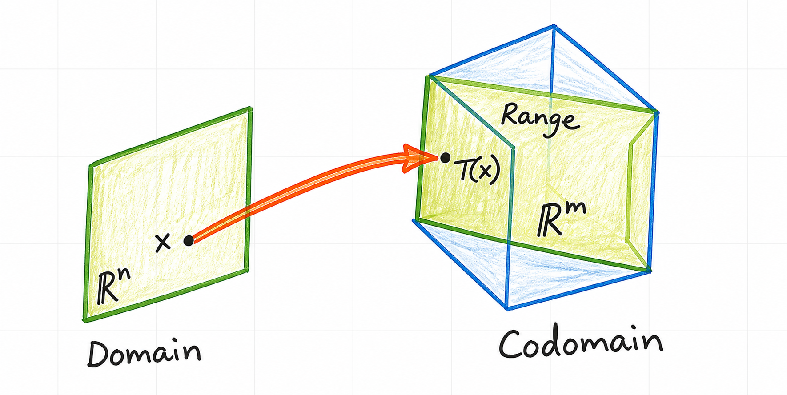
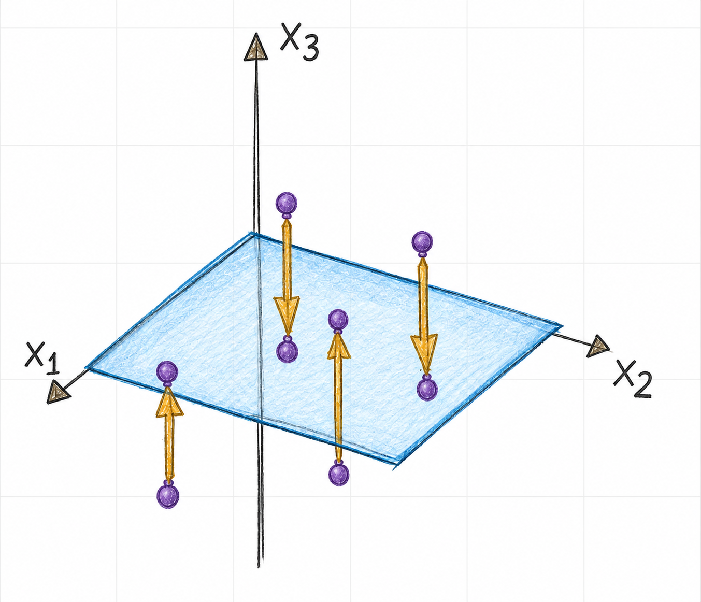
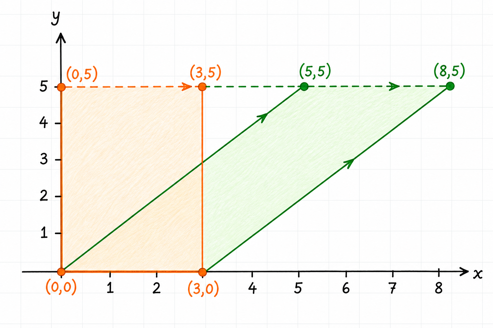

Linear Transformations
A transformation describes a rule for mapping vectors from one vector space to another. Linear transformations are especially important because they preserve the vector-space operations of addition and scalar multiplication. Matrices give a concrete and computationally useful representation of them.
1 Transformations between vector spaces
A transformation, also called a function or mapping, from \(\mathbb{R}^n\) to \(\mathbb{R}^m\) is written
\[ T : \mathbb{R}^n \to \mathbb{R}^m \]
For each input vector \(\vec{x}\in\mathbb{R}^n\), the transformation assigns one output vector \(T(\vec{x})\in\mathbb {R}^m\).
\(\mathbb{R}^n\) is the domain, the set of permitted input vectors.
\(\mathbb{R}^m\) is the codomain, the vector space in which output vectors lie.
\(T(\vec{x})\) is the image of \(\vec{x}\) under \(T\).
The range of \(T\) is the set of vectors that \(T\) can actually produce:
\[ \operatorname{range}(T) = \{\,T(\vec{x}) : \vec{x}\in\mathbb{R}^n\,\} \]
The range is a subset of the codomain. A transformation need not reach every vector in its codomain, as illustrated in Figure 1.

2 Matrix transformations
An \(m\times n\) matrix \(A\) defines a transformation
\[ T : \mathbb{R}^n \to \mathbb{R}^m, \qquad T(\vec{x})=A\vec{x} \]
The \(n\) columns of \(A\) determine the dimension of the domain, while its \(m\) rows determine the dimension of the codomain. When \(A\) is clear from context, the transformation is often written simply as
\[ \vec{x}\mapsto A\vec{x} \]
Consider
\[ A= \begin{bmatrix} 1 & -3 \\ 3 & 5 \\ -1 & 7 \end{bmatrix} \]
Because \(A\) has three rows and two columns, it defines a transformation from \(\mathbb{R}^2\) to \(\mathbb{R}^3\):
\[ T\!\left( \begin{bmatrix} x_1 \\ x_2 \end{bmatrix} \right) = \begin{bmatrix} 1 & -3 \\ 3 & 5 \\ -1 & 7 \end{bmatrix} \begin{bmatrix} x_1 \\ x_2 \end{bmatrix} = \begin{bmatrix} x_1-3x_2 \\ 3x_1+5x_2 \\ -x_1+7x_2 \end{bmatrix} \]
2.1 Finding an image
Let
\[ \vec{u}= \begin{bmatrix} 2 \\ -1 \end{bmatrix} \]
Its image is found by multiplying by \(A\):
\[ \begin{aligned} T(\vec{u}) &=A\vec{u} \\ &= \begin{bmatrix} 1 & -3 \\ 3 & 5 \\ -1 & 7 \end{bmatrix} \begin{bmatrix} 2 \\ -1 \end{bmatrix} \\ &= \begin{bmatrix} 5 \\ 1 \\ -9 \end{bmatrix} \end{aligned} \]
Thus, \(T\) maps \((2,-1)^T\) in the domain to \((5,1,-9)^T\) in the codomain.
3 Preimages and the range
To find a vector whose image is a specified vector \(\vec{b}\), solve
\[ T(\vec{x})=\vec{b} \]
or, for a matrix transformation,
\[ A\vec{x}=\vec{b} \]
For
\[ \vec{b}= \begin{bmatrix} 3 \\ 2 \\ -5 \end{bmatrix} \]
row reduction gives
\[ \left[ \begin{array}{cc|c} 1 & -3 & 3 \\ 3 & 5 & 2 \\ -1 & 7 & -5 \end{array} \right] \xrightarrow[ R_3\leftarrow R_3+R_1 ]{R_2\leftarrow R_2-3R_1} \left[ \begin{array}{cc|c} 1 & -3 & 3 \\ 0 & 14 & -7 \\ 0 & 4 & -2 \end{array} \right] \xrightarrow{} \left[ \begin{array}{cc|c} 1 & 0 & \tfrac32 \\ 0 & 1 & -\tfrac12 \\ 0 & 0 & 0 \end{array} \right] \]
Therefore,
\[ \vec{x}= \begin{bmatrix} \tfrac32 \\ -\tfrac12 \end{bmatrix} \]
is a preimage of \(\vec{b}\). There are no free variables, so it is the unique preimage. In particular, \(\vec{b}\) belongs to \(\operatorname{range}(T)\).
To test whether a vector belongs to the range, solve the corresponding matrix equation. For
\[ \vec{c}= \begin{bmatrix} 3 \\ 2 \\ 5 \end{bmatrix} \]
the augmented matrix reduces to
\[ \left[ \begin{array}{cc|c} 1 & -3 & 3 \\ 3 & 5 & 2 \\ -1 & 7 & 5 \end{array} \right] \sim \left[ \begin{array}{cc|c} 1 & 0 & \tfrac32 \\ 0 & 1 & -\tfrac12 \\ 0 & 0 & \tfrac52 \end{array} \right] \]
The final row represents the impossible equation \(0=\tfrac52\). The system is inconsistent, so \(\vec{c}\) is not in \(\operatorname{range}(T)\).
4 Geometric matrix transformations
Matrix transformations can change a vector’s direction, length, or position while preserving the structure that makes the transformation linear.
4.1 Projection onto a plane
The matrix
\[ P= \begin{bmatrix} 1 & 0 & 0 \\ 0 & 1 & 0 \\ 0 & 0 & 0 \end{bmatrix} \]
defines a transformation from \(\mathbb{R}^3\) to \(\mathbb{R}^3\):
\[ P \begin{bmatrix} x_1 \\ x_2 \\ x_3 \end{bmatrix} = \begin{bmatrix} x_1 \\ x_2 \\ 0 \end{bmatrix} \]
It leaves the \(x_1\)- and \(x_2\)-coordinates unchanged and replaces the \(x_3\)-coordinate with zero. Thus, it projects every vector onto the \(x_1x_2\)-plane, as shown in Figure 2.

The range is exactly that plane:
\[ \operatorname{range}(P) = \left\{ \begin{bmatrix} x_1 \\ x_2 \\ 0 \end{bmatrix} : x_1,x_2\in\mathbb{R} \right\} \]
4.2 Horizontal shear
For a scalar \(k\), the matrix
\[ S= \begin{bmatrix} 1 & k \\ 0 & 1 \end{bmatrix} \]
defines the horizontal shear
\[ S \begin{bmatrix} x \\ y \end{bmatrix} = \begin{bmatrix} x+ky \\ y \end{bmatrix} \]
The \(y\)-coordinate remains fixed, while the \(x\)-coordinate shifts by an amount proportional to \(y\). For \(k=1\), the rectangle with vertices \((0,0)\), \((3,0)\), \((0,5)\), and \((3,5)\) maps to the parallelogram with vertices \((0,0)\), \((3,0)\), \((5,5)\), and \((8,5)\); see Figure 3. The \(x\)-axis remains fixed because points on it have \(y=0\).

5 Linearity and superposition
A transformation \(T\) is linear if, for all vectors \(\vec{u}\) and \(\vec{v}\) in its domain and every scalar \(c\),
\[ T(\vec{u}+\vec{v})=T(\vec{u})+T(\vec{v}) \]
and
\[ T(c\vec{u})=cT(\vec{u}) \]
The second condition implies that a linear transformation maps the zero vector to the zero vector:
\[ T(\vec{0})=T(0\vec{u})=0T(\vec{u})=\vec{0} \]
Combining the two conditions gives a useful rule for arbitrary scalars \(c\) and \(d\):
\[ \begin{aligned} T(c\vec{u}+d\vec{v}) &=T(c\vec{u})+T(d\vec{v}) \\ &=cT(\vec{u})+dT(\vec{v}) \end{aligned} \]
Conversely, a transformation that satisfies this combined rule for every choice of \(\vec{u}\), \(\vec{v}\), \(c\), and \(d\) is linear. Setting \(c=d=1\) gives the addition rule, while setting \(d=0\) gives the scalar-multiplication rule.
Every matrix transformation is linear. If \(T(\vec{x})=A\vec{x}\), then
\[ \begin{aligned} T(c\vec{u}+d\vec{v}) &=A(c\vec{u}+d\vec{v}) \\ &=cA\vec{u}+dA\vec{v} \\ &=cT(\vec{u})+dT(\vec{v}) \end{aligned} \]
Repeated application of this rule gives the superposition principle:
\[ T\!\left(\sum_{i=1}^{p}c_i\vec{v}_i\right) = \sum_{i=1}^{p}c_iT(\vec{v}_i) \]
In engineering and physics, the vectors \(\vec{v}_1,\ldots,\vec{v}_p\) can represent input signals to a linear system. Superposition states that the response to a weighted sum of input signals is the same weighted sum of their individual responses.
6 Scaling and rotation
6.1 Scaling
For a scalar \(r\), define
\[ T : \mathbb{R}^2\to\mathbb{R}^2 \qquad T(\vec{x})=r\vec{x} \]
This transformation is a contraction when \(0<r<1\) and a dilation when \(r>1\). The special cases \(r=0\) and \(r=1\) give the zero transformation and the identity transformation, respectively. For all vectors \(\vec{u}\) and \(\vec{v}\) and all scalars \(c\) and \(d\),
\[ \begin{aligned} T(c\vec{u}+d\vec{v}) &=r(c\vec{u}+d\vec{v}) \\ &=c(r\vec{u})+d(r\vec{v}) \\ &=cT(\vec{u})+dT(\vec{v}) \end{aligned} \]
Thus, scaling is a linear transformation. For example, \(r=3\) triples the length of every vector while preserving its direction.
6.2 Rotation by \(90^\circ\)
The matrix
\[ R= \begin{bmatrix} 0 & -1 \\ 1 & 0 \end{bmatrix} \]
defines a counterclockwise rotation by \(90^\circ\):
\[ T\!\left( \begin{bmatrix} x_1 \\ x_2 \end{bmatrix} \right) = R \begin{bmatrix} x_1 \\ x_2 \end{bmatrix} = \begin{bmatrix} -x_2 \\ x_1 \end{bmatrix} \]
For
\[ \vec{u}= \begin{bmatrix}4 \\ 1\end{bmatrix} \qquad \vec{v}= \begin{bmatrix}2 \\ 3\end{bmatrix} \]
we obtain
\[ T(\vec{u})= \begin{bmatrix}-1 \\ 4\end{bmatrix} \qquad T(\vec{v})= \begin{bmatrix}-3 \\ 2\end{bmatrix} \]
Also,
\[ \begin{aligned} T(\vec{u}+\vec{v}) &= T\!\left( \begin{bmatrix}6 \\ 4\end{bmatrix} \right) \\ &= \begin{bmatrix}-4 \\ 6\end{bmatrix} \\ &= \begin{bmatrix}-1 \\ 4\end{bmatrix} + \begin{bmatrix}-3 \\ 2\end{bmatrix} \\ &=T(\vec{u})+T(\vec{v}) \end{aligned} \]
The example makes the addition part of linearity visible: rotating the sum is the same as summing the rotated vectors.
7 Summary
- A transformation \(T : \mathbb{R}^n\to\mathbb{R}^m\) maps each vector in its domain to one vector in its codomain.
- An \(m\times n\) matrix defines a transformation from \(\mathbb{R}^n\) to \(\mathbb{R}^m\).
- Solving \(A\vec{x}=\vec{b}\) finds preimages of \(\vec{b}\) and tests whether \(\vec{b}\) is in the range.
- Projection, shear, scaling, and rotation are geometric examples of matrix transformations.
- A linear transformation preserves vector addition and scalar multiplication.
- The superposition principle is the engineering consequence of linearity.